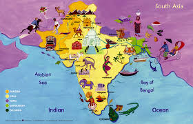

Amazing Facts
IndiaIndian culture is a fusion of cultures of Hindus, Muslims, Sikhs, Buddhists, Jains, and other Indian tribal communities. Indian culture involves Yoga, Kumbh Mela, celebrating festivals (Diwali, Eid, Baisakhi, Buddha-Purnima, Onam, and many more), clothing, beliefs, customs, ethics, social norms, art crafts, and technologies. Many elements of Indian culture (like mathematics, philosophy, food, etc.) have influenced the world too. Indian culture teaches us to respect each other, be kind, tolerant, and generous. When we look at this country culture and tradition it is seen that it beholds various forms of Indian culture in it. Though every state has a different and unique culture yet there is one thing which is common in all the cultures of this country and that is hospitality towards their guests. People of this country welcome their guests wholeheartedly no matter which country or religion they belong to. The Indian culture beholds several things in it which makes it so rich and prosperous, also that is today followed not only in India but in many other countries also.
My Country
Indian culture is one of the oldest and most diverse cultures in the world. Still, many Indians are stick to their culture. Indians way of hospitality, greeting, ethics, belongingness, unity, adapting behaviour makes India unique in sustaining its culture over than rest of the world. India as a nation is a cohesion of distinct religions, cultures, tribes, languages, traditions, beliefs, practices and so on. It shows that different kinds of social institutions can bring people together (ranging from family to market) and create strong social cohesion. India is a successful example of a nation-state, that shows that it is perfectly possible to have a strong nation-state without having to homogenize different community identities into a standard type and accepting individuality.There must be some problems or limitations to the diversity of this country related to communism, casteism, religion etc. But, despite of all the challenges India has done fairly well compared to most of the other nations of the world. India has survived not only as a nation but as a strong nation-state.